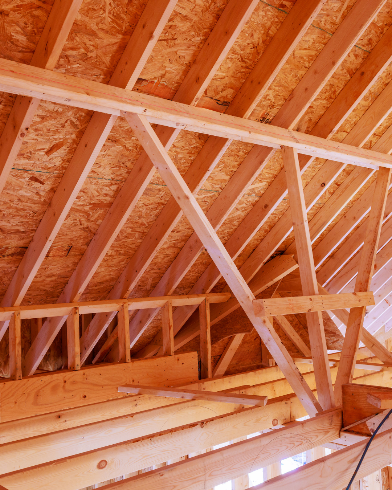

Vous vous demandez s'il est temps de refaire votre toiture à Montauban ? Tuiles cassées, infiltrations, mousse envahissante, factures de chauffage qui grimpent… Les signaux ne trompent pas. Dans ce guide, notre équipe de couvreurs à Montauban vous explique quand rénover, quelles aides financières solliciter, et comment se déroule concrètement un chantier de réfection de toiture dans le Tarn-et-Garonne.
Pourquoi refaire sa toiture à Montauban est souvent indispensable
Le climat du Tarn-et-Garonne met les toitures à rude épreuve. Entre les pluies parfois abondantes, les épisodes de gel et les vents qui descendent sur la plaine de France, une couverture non entretenue vieillit plus vite qu'ailleurs. Les maisons anciennes de Montauban, Castelsarrasin ou Moissac affichent souvent des toitures de plus de 50 ans qui arrivent en fin de cycle.
Refaire sa toiture à Montauban n'est pas qu'une question esthétique. C'est avant tout une décision technique : protéger la charpente, garantir l'étanchéité du bâti, améliorer l'isolation thermique et préserver la valeur du bien. Un toit en bon état représente jusqu'à 15 % de la valeur de revente d'une maison — c'est un investissement rentable.
Attendre trop longtemps, c'est risquer des dégâts en cascade : infiltrations dans les combles, pourrissement de la charpente, humidité dans les murs porteurs, perte d'isolation. Un diagnostic précoce évite des travaux annexes qui peuvent doubler la facture finale.
Les 7 signes qu'il faut refaire sa toiture
Comment savoir si votre toiture arrive en fin de vie ? Voici les signaux d'alerte que notre équipe de couverture à Montauban rencontre le plus souvent lors des diagnostics.
1. Tuiles cassées, déplacées ou manquantes
Une tuile cassée laisse entrer l'eau. Dix tuiles cassées compromettent l'étanchéité d'un pan entier. Si vous comptez plus de 5 à 10 % de tuiles abîmées ou déplacées, une réfection partielle ou complète devient plus rentable qu'une réparation au coup par coup.
2. Infiltrations visibles dans les combles
Des auréoles jaunes ou brunes au plafond, des traces d'humidité sur la charpente, de la condensation anormale : ce sont les premiers signes d'une couverture qui fuit. Inspectez vos combles après chaque forte pluie pour détecter les infiltrations avant qu'elles ne causent des dégâts structurels.
3. Mousse persistante et végétation
La mousse retient l'humidité et dégrade les tuiles en accélérant leur porosité. Si elle couvre plus de 30 % de votre toiture malgré un démoussage, c'est souvent le signe que les tuiles sont déjà poreuses et arrivent en fin de vie.

4. Charpente qui se déforme ou s'affaisse
Un faîtage ondulant, des pans qui s'affaissent, des poutres qui fléchissent : ces déformations indiquent que la structure a souffert. À ce stade, refaire la toiture devient urgent pour éviter un effondrement partiel.
5. Factures d'énergie qui grimpent
Une toiture vieillissante laisse s'échapper jusqu'à 30 % de la chaleur du logement. Si vos dépenses de chauffage ont augmenté sans raison apparente, il est probable que votre couverture et son isolation ne jouent plus leur rôle. Associer rénovation toiture et isolation des combles optimise les deux postes d'un coup.
6. Âge avancé de la toiture
Chaque matériau a une espérance de vie. Les tuiles mécaniques tiennent 40 à 60 ans, les ardoises naturelles 75 à 100 ans, le zinc 60 à 80 ans, le bac acier 40 à 50 ans. Si votre toiture dépasse ces seuils, un bilan par un couvreur Montauban qualifié s'impose.
7. Zinguerie rouillée ou déformée
Des gouttières percées, des noues rouillées, des solins décollés… Quand la zinguerie lâche, l'eau s'infiltre en cascade. Une réfection de toiture inclut toujours la rénovation complète de la zinguerie pour garantir une étanchéité durable.
Refaire sa toiture ou simplement réparer : comment choisir ?
Tout n'impose pas une réfection complète. Pour vous aider à décider, voici les critères que notre équipe de couvreurs Montauban évalue lors du diagnostic :
- État global des matériaux : si plus de 30 % des tuiles sont dégradées, la réfection est plus rentable.
- État de la charpente : une charpente saine permet la simple pose d'une nouvelle couverture ; déformée, elle doit être traitée ou renforcée.
- Âge : au-delà de l'espérance de vie du matériau, la réfection s'impose même sans défauts apparents.
- Isolation actuelle : refaire le toit est l'occasion idéale d'intégrer une isolation performante (sarking, laine soufflée).
Conseil Jeff Couverture : notre inspection par drone offre une vue complète de votre toiture sans échafaudage. Nous vous remettons un rapport HD sous 24 h pour décider en connaissance de cause entre réparation et réfection.
Les aides financières pour refaire sa toiture
Bonne nouvelle : refaire sa toiture ouvre droit à plusieurs aides publiques, surtout si vous incluez une amélioration de l'isolation. Un couvreur Montauban certifié RGE (comme Jeff Couverture) est la condition sine qua non pour en bénéficier.
- MaPrimeRénov' : un montant variable selon vos revenus et la surface isolée
- Éco-prêt à taux zéro : un prêt sans intérêts pour les travaux de rénovation énergétique
- TVA réduite à 5,5 % sur l'isolation et à 10 % sur la main d'œuvre pour l'ensemble de la toiture
- Primes CEE (Certificats d'Économies d'Énergie) versées par les fournisseurs d'énergie
- Aides locales du Tarn-et-Garonne selon les communes (renseignez-vous à la mairie de Montauban)
Le cumul de ces aides peut réduire la facture de 30 à 50 %. Notre équipe vous accompagne gratuitement dans le montage des dossiers MaPrimeRénov' et CEE.
Les étapes d'une rénovation de toiture par Jeff Couverture
Chaque chantier de réfection de toiture à Montauban suit un processus rigoureux. Voici le déroulé type que nous appliquons à chaque client :
Étape 1 : Diagnostic par drone et devis
Nous commençons par un diagnostic complet, le plus souvent réalisé par drone pour inspecter chaque pente sans échafaudage. Vous recevez un rapport photo/vidéo HD sous 24 h, suivi d'un devis détaillé sous 48 h.
Étape 2 : Déclaration préalable en mairie
Nous préparons avec vous la déclaration préalable de travaux (obligatoire à Montauban si changement d'aspect). Le traitement prend généralement 1 à 2 mois à la mairie.
Étape 3 : Dépose de l'ancienne couverture
Les tuiles, ardoises ou plaques anciennes sont déposées avec soin. Les matériaux réutilisables sont mis de côté, les déchets évacués en centre de tri agréé.

Étape 4 : Diagnostic et traitement de la charpente
Une fois la couverture déposée, nous examinons la charpente : insectes xylophages, champignons, bois pourri. Le traitement de charpente est intégré au devis initial quand nécessaire.
Étape 5 : Pose de l'écran sous-toiture et isolation
Nous posons un écran sous-toiture HPV (haute perméabilité à la vapeur) pour parfaire l'étanchéité. C'est aussi le moment idéal pour renforcer l'isolation par sarking entre chevrons.
Étape 6 : Pose de la nouvelle couverture et zinguerie
Tuiles, ardoises, zinc ou bac acier sont posés selon les règles de l'art (DTU 40). La zinguerie neuve (gouttières, noues, solins, faîtages) est intégrée en fin de chantier.
Étape 7 : Nettoyage et réception
Nous laissons le chantier impeccable : aucun déchet au sol, jardin remis en état, gravats évacués. La réception se fait avec vous, attestations décennale et assurance en main.
Jeff Couverture : votre couvreur Montauban pour refaire votre toit
Fondée par Jeff Bauer, notre entreprise est spécialisée dans la réfection complète de toiture à Montauban et dans tout le Tarn-et-Garonne depuis plus de 10 ans. Nous intervenons sur tous types de couvertures : tuiles, ardoises, zinc, bac acier, toitures plates EPDM.
Nos engagements quand vous nous confiez votre rénovation de toiture :
- Garantie décennale sur tous les travaux
- Assurance responsabilité civile professionnelle
- Diagnostic drone offert avec devis
- Aucune sous-traitance : la même équipe du diagnostic à la réception
- Accompagnement administratif (MaPrimeRénov', CEE, déclaration préalable)
- Propreté de chantier garantie
Questions fréquentes sur la réfection de toiture à Montauban
Quelle est la durée de vie d'une toiture dans le Tarn-et-Garonne ?
Une toiture en tuiles mécaniques dure 40 à 60 ans, une toiture en ardoise jusqu'à 100 ans, une toiture en zinc 60 à 80 ans. L'entretien régulier prolonge significativement cette durée.
Quelles aides financières pour refaire sa toiture en 2026 ?
Vous pouvez cumuler MaPrimeRénov', l'éco-prêt à taux zéro, la TVA à 5,5 % et les aides locales. Un couvreur Montauban RGE vous accompagne dans les démarches.
Combien de temps dure une rénovation de toiture ?
Une rénovation complète dure entre 1 et 3 semaines selon la surface et la météo. Jeff Couverture réalise la plupart des chantiers résidentiels à Montauban en 7 à 10 jours ouvrés.
Faut-il un permis pour refaire sa toiture à Montauban ?
Une simple déclaration préalable en mairie suffit si vous gardez le même matériau et la même couleur. Un permis de construire est requis uniquement en cas de modification de volume ou de pente.
Un projet de rénovation de toiture à Montauban ?
Demandez gratuitement votre diagnostic drone et un devis détaillé sous 48 h. Inspection offerte, aucun engagement.